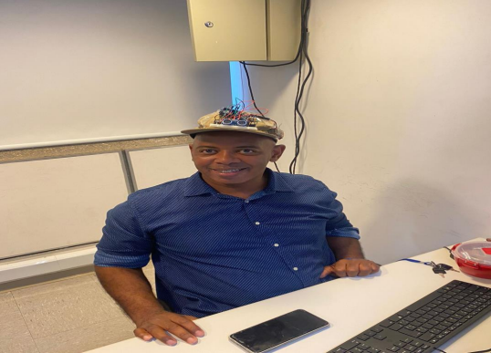
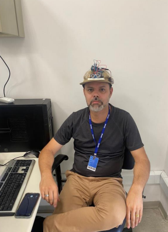

INSTITUTO DE ENSINO SENAC
Atividade Carrinho
Andrei Rocha, Felipe Costa, Kauã Humberto e Mateus Kelm.
Relatório do projeto
São Paulo 2024
Relatório do projeto
Trabalho carrinho apresentado ao Curso de IOT turma 1 do Senac Nações Unidas.
São Paulo 2024
Sumário
- Introdução .............................................................................................................................7
- Desenvolvimento....................................................................................................................7
- Resultados...............................................................................................................................9
- Análise dos Resultados...........................................................................................................9
- Possíveis Melhorias...............................................................................................................9
- Conclusão.............................................................................................................................10
- Integração com outras áreas do conhecimento.................................................................10
- Referências Bibliográficas..................................................................................................11
INTRODUÇÃO
A robótica é uma área em crescente importância na sociedade contemporânea, impactando diversos setores, como a indústria, medicina e educação. Este projeto visa explorar conceitos fundamentais da robótica e suas aplicações práticas, proporcionando aos alunos uma experiência enriquecedora.
Desenvolvimento
Etapa 1: Planejamento
Nesta etapa, foram definidos os objetivos do carrinho seguidor de linha foi selecionado por ser um projeto introdutório que permite a integração de diversos conceitos.
Etapa 2: Materiais Utilizados
Os materiais necessários foram listados e adquiridos:
- Kit de robótica Arduino (ou componentes individuais: placa Arduino, motor, rodas, chassi, sensores de linha, etc.)
- Software Arduino IDE
- Ferramentas de solda (opcional)
- Tinkercad
- Câmera ou celular para registro de fotos e vídeos
Etapa 3: Montagem
A montagem do carrinho foi realizada conforme o esquema do tutorial encontrado em Eletrogate. A seguir, algumas fotos da montagem:

Etapa 4: Programação
O código fonte foi desenvolvido
Tarefas do Carrinho Video
Atividade Boné
Atividade Boné
Introdução
Foi dado a nós o objetivo de fazer um sistema inovador incorporado em um boné que
funcione como um sensor de ré e deve ser capaz de detectar objetos próximos, emitir sinais
sonoros e visuais de alerta, além de identificar a ausência de luz ambiente. Para fazer o sistema,
utilizaremos a plataforma Arduino para implementar e integrar todos os componentes
necessários.
Dia 1
No primeiro dia nos praticamente terminamos a atividade, pois desenvolvemos o código
completo da programação e também colocamos todos os componentes no Arduino. Tinha dado
tudo certo e tudo funcionando perfeitamente. Não terminamos pois não tiamos boné nem a
bateria pra ligar o Arduino. Se tivéssemos, já terminariamos naquele dia mesmo, faltando só o
relatório.

Dia 3
O segundo dia foi um tremendo fracasso. Primeiro que o integrante do nosso grupo Kauã
machucou o joelho e não pôde comparecer e também o Andrei teve que sair para ensaiar a dança
para o maracatu rural. Então ficou eu e o Kelm montando o Arduino e também foi um fracasso
pois não estava funcionando. Depois descobrimos que alguns fios estavam conectados errados.
Tentamos arrumar mas logo desistimos pois descobrimos que ninguém trouxe a bateria para
conectar junto no boné. E também tinha que fazer o relatório mas o tempo da aula estava
acabando. Felizmente o professor deu mais uma semana para entrega.

Dia 3
Nesse dia deu tudo certo. Conseguimos fazer tudo. Dessa vez montamos o Arduino
corretamente, o código funcionou também. Trouxemos os materiais necessários e colocamos
tudo certinho no boné. Foi um sucesso!


Integração com as disciplinas
Ciências da Natureza:
Fisica
- Estudo dos sensores ultrassônicos utilizados para detectar objetos próximos.
- Análise dos componentes eletrônicos, como resistores, capacitores e LEDs.
- Compreensão das ondas sonoras e como são usadas para medir distâncias.
Quimica
- Investigação sobre os materiais dos componentes eletrônicos e sua reatividade.
- Análise dos impactos ambientais dos componentes eletrônicos.
Ciencias Humanas

Historia
- Pesquisa sobre a evolução dos sensores e da tecnologia de ultrassom.
- Estudo do desenvolvimento histórico da eletrônica vestível.
Geografia
- Análise do impacto ambiental da produção e descarte de componentes eletrônicos.
- Investigação de como diferentes condições ambientais (como temperatura e umidade) podem
afetar o funcionamento dos sensores.
Linguagens
Matematica
- Cálculos para determinar as distâncias medidas pelos sensores ultrassônicos.
- Análise de dados coletados pelos sensores para ajustar a sensibilidade e calibrar o sistema.
Tarefas Favoritas do Aluno
- PRODUÇÃO EXPRESSIONISTA
- MASCOTE DA SALA